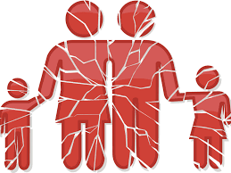

Violencia física: Es cuando el agresor utiliza el miedo y la agresión, para así paralizar a su víctima, generando daño corporal con golpes, cortadas, u objetos, por ejemplo, con armas. Por ejemplo, cuando los padres/madres de familia golpean a sus hijos/as.importante destacar que el maltrato físico está íntegramente ligado al maltrato emocional.
Sexual. Suele acompañar o seguir el maltrato físico, y tiene como consecuencia una violación u otra actividad sexual forzada.
Psicológica o emocional. Una persona que maltrata a menudo lo hace mentalmente o emocionalmente con palabras, amenazas, hostigamiento, posesión extrema, aislamiento forzado y destrucción de pertenencias. El aislamiento a menudo se produce cuando la persona que maltrata intenta controlar el tiempo, las actividades y el contacto con otras personas de la víctima. Las personas que maltratan pueden lograr esto al interferir con las relaciones de apoyo de la víctima, crear barreras para las actividades normales, como sustraer las llaves del coche o encerrar a la víctima en la casa, y mentir y distorsionar la realidad para obtener el control psicológico.
Acoso. Conducta de hostigamiento o amenaza repetida que a menudo deriva en maltrato físico o sexual.
Económica. Esto se da cuando la persona que maltrata controla el acceso a todos los recursos de la víctima, como el tiempo, el transporte, el alimento, la vestimenta,el refugio, el seguro y el dinero. Por ejemplo, puede interferir con la capacidad de la víctima de autoabastecerse e insistir en controlar todas las finanzas de la víctima. Cuando la víctima abandona la relación violenta, el perpetrador puede recurrir al aspecto económico como una manera de mantener el control u obligar a la víctima a regresar.
